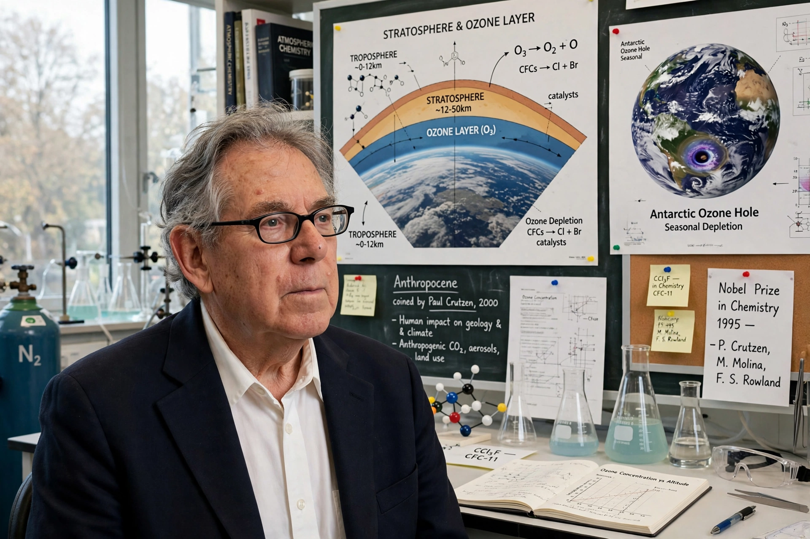

Paul Jozef Crutzen (3 December 1933 – 28 January 2021) was a Dutch meteorologist and atmospheric chemist who shared the 1995 Nobel Prize in Chemistry for work on ozone depletion and popularized the term Anthropocene.

Working in Stockholm, Crutzen showed in 1970 that nitrogen oxides catalytically destroy stratospheric ozone. He shared the Nobel Prize with Mario Molina and F. Sherwood Rowland, whose work identified chlorofluorocarbons as a major threat, underpinning the Montreal Protocol.
With John Birks he co-authored an early study of "nuclear winter" (1982). In 2000, with Eugene Stoermer, he proposed that human impact has created a new geological epoch, the Anthropocene. He directed the Max Planck Institute for Chemistry in Mainz.